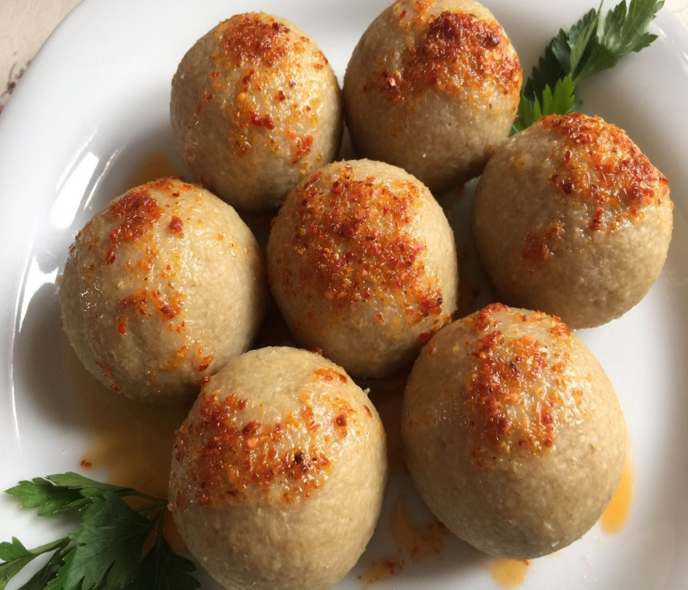

Muş Köftesi

Muş Köftesi Tarifi İçin Malzemeler
Yarım kilo yağsız dana kıyma
1 adet yumurta
1,5 kase ince bulgur (ev yapımı olsa daha sıkı olur)
Tuz
Su (yoğurmak için)
İç harcı için;
4-5 adet büyük kuru soğan
Daha lezzetli olsun diye birazcık kıyma
1 kaşık yağ
Pul biber
Tuz
Haşlamak için;
Tuz
Su
Üzeri için;
Tereyağı
Muş köftesi tarifini YouTube da izle...
Copyright © 2022 - InfoTech